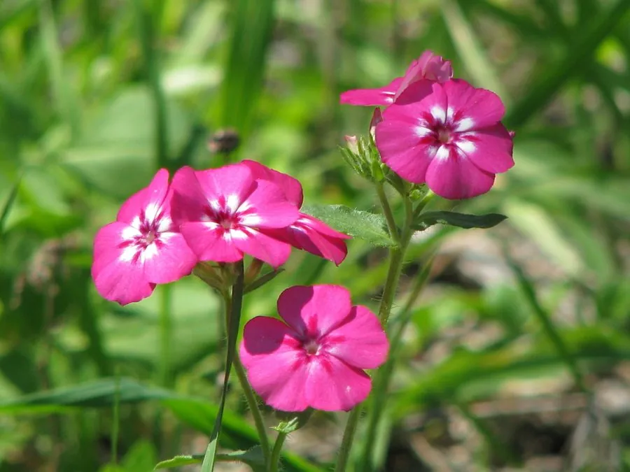

花卉与草本 · 植物界
福禄考 Phlox drummondii

花荵科一年生草本，花冠五裂、色彩明快，常成片开放如彩色地毯，是春夏季花坛的常用草花，原产美国得克萨斯。
- 分类
- 门被子植物门纲木兰纲目杜鹃花目科花荵科属福禄考属
- 栖息环境
- 美国得克萨斯的草原与沙地，喜温暖、阳光充足
- 地理分布
- 原产美国南部，现世界各地栽培，中国各地花坛常见
- 保护级别
- 暂无评估
物种志
福禄考为花荵科福禄考属一年生草本，株高 20–45 厘米，茎直立或匍匐，全株被短毛。叶片卵形至披针形，互生。聚伞花序顶生，花冠高脚碟状，5 裂，有红、粉、紫、白等色，喉部常有深色斑纹，花期 5–8 月；果实为蒴果。
福禄考原产美国得克萨斯州的草原，喜阳光充足、温暖干燥和排水良好的环境，不耐寒也不耐酷热，播种后约两个月即可开花。它株型低矮、花色明快，适合布置花坛、花境和岩石园，也可作盆栽和切花。园艺品种有矮生、大花、星花等类型，成片种植时如铺了一层彩色地毯；矮生品种适合花坛镶边，高生品种可剪下作切花，瓶插期约一周。
形态与习性
- 株高20–45 厘米，茎直立或匍匐
- 花期5–8 月
- 果期花后结蒴果
- 光照喜充足阳光
- 水分喜湿润，忌积水
- 土壤疏松、排水良好的沙壤土
- 主要用途花坛、花境、盆栽、切花
趣味知识
- 福禄考的花冠喉部常有深色斑纹，是识别品种的重要特征。
- 它原产美国得克萨斯，播种后约两个月即可开花。
- 园艺品种有矮生、大花、星花等类型，花色十分丰富。
- 福禄考成片种植时如铺了一层彩色地毯，是花坛的常用材料。